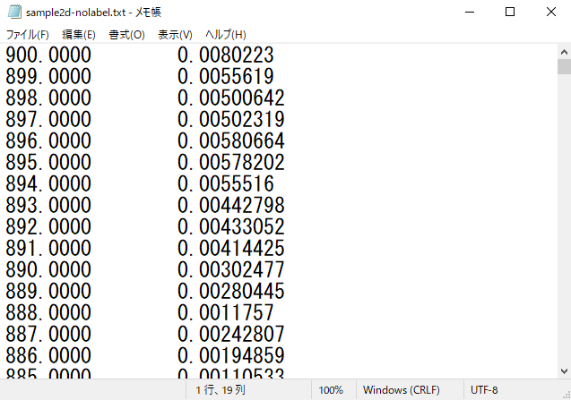
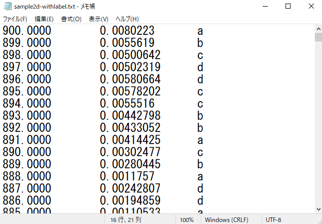
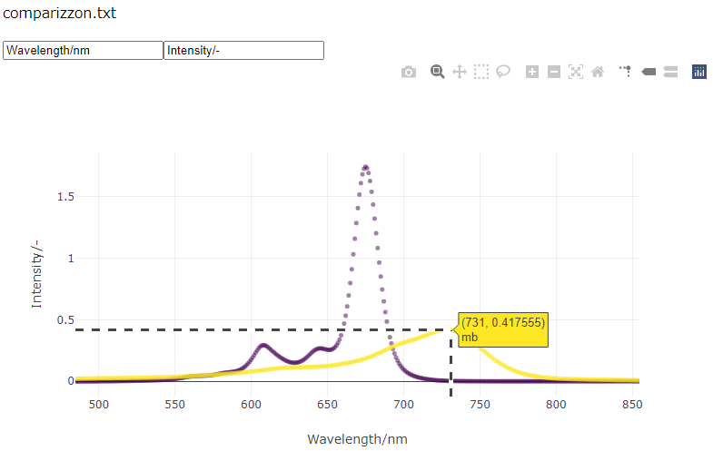
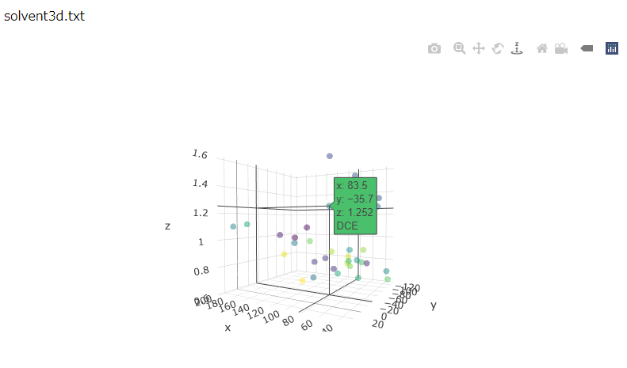

Plotのページは30分放置するとサーバーが寝るのでリンクをクリックしてすぐに表示されない
ときは気長に待ってみてください、サーバー起動中だと思うので。
・アップロードできるものはデータがタブで区切られたtxtファイルのみです(今のところ)。
・タブ区切りのテキストデータはexcelで数字の表をそのままメモ帳にコピペするか、
名前をつけて保存を選択して"ファイルの種類"の所を"テキスト(タブ区切り)(*.txt)"
にすればできます。
・データは数字のみ可能です(ラベルは英数字)。カラム名（データの項目名）は削除してください
・ドラッグアンドドロップか、クリックしてエクスプローラーから選択してアップロードします。
一気に複数のファイルをアップすることは想定していません。
・ファイルサイズの上限は大体500KBに設定してあります。
・アップロードされたデータは一時的にサーバーに保存されますが、次のファイルがアップされたら
それに上書きされて無くなるようになってます。
・データに空白の所があると上手くいきません
2d-plotでは、縦 x 横 = (データ数 x 2) もしくはラベルの項目を入れて(データ数 x 3)のみ可です。
こんなの↓

もしくはラベルを加えてこんなの↓
ラベル名に日本語があるとうまくいかないので英数字で

3d-plotでは、縦 x 横 = (データ数 x 3) もしくはラベルの項目を入れて(データ数 x 4)のみ可です。
~~~グラフの触り方~~~
・適当にデータ点にカーソルを合わせると、そこの座標とラベルが表示されます
・ラベルなしのデータだとラベルの値は1になっています。
・範囲選択するとそこが拡大されます。拡大から戻るのはダブルクリックです。
・その他簡単なオプションは右上のアイコンにあるので適当に選んでみてください。
・2d-plotのみ軸の名前を入力する欄を用意しました。
以下サンプルイメージ


ラベルで点が色分けされるので比較しながらグラフに触りたい時などにどうぞ